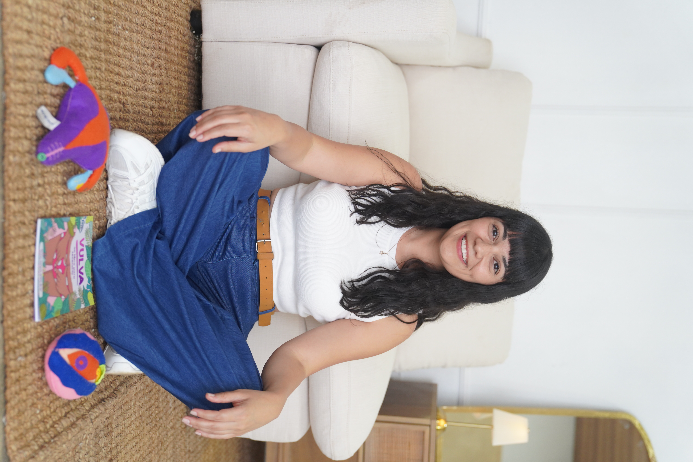
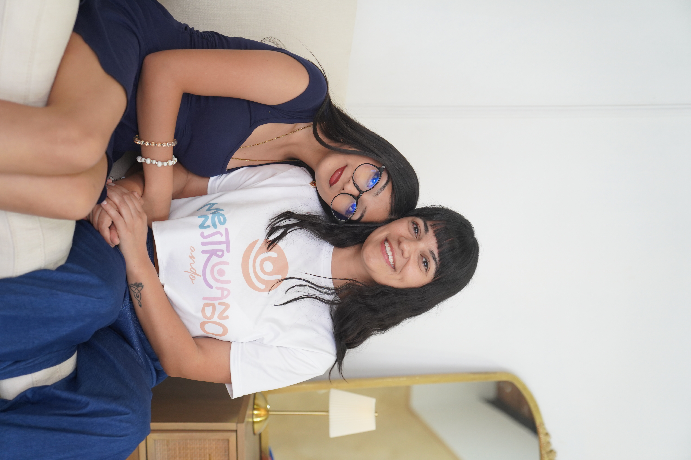
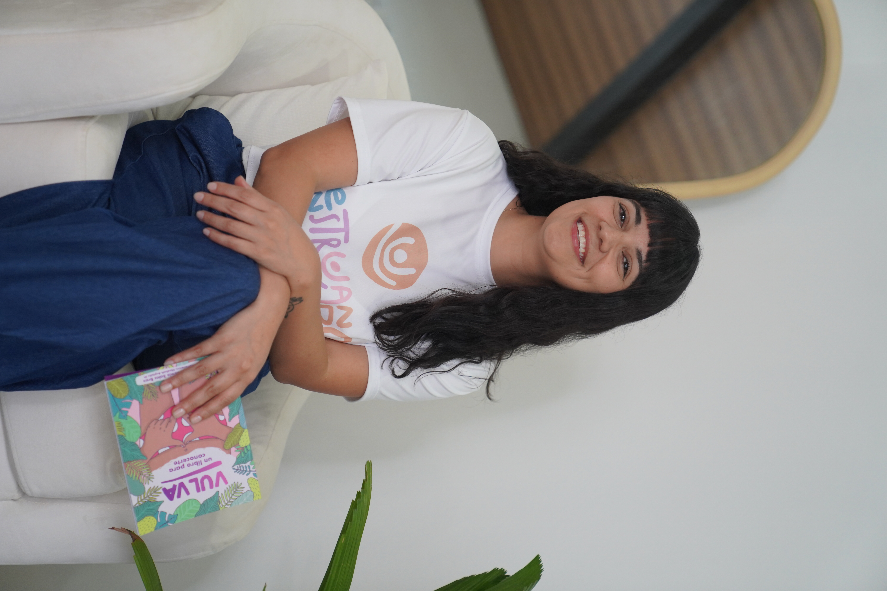

Niñas y adolescentes
Información clara, respetuosa y apropiada para cada etapa de desarrollo.
Creamos espacios educativos y respetuosos para que niñas y adolescentes comprendan los cambios de la pubertad, conozcan su ciclo menstrual y se sientan acompañadas antes, durante y después de su primera menstruación.

Información clara, respetuosa y apropiada para cada etapa de desarrollo.
Herramientas para acompañar sin miedo, vergüenza ni tabúes.
Talleres y charlas adaptados a las necesidades de cada comunidad.

Ese mismo día, mi hija Gaga y yo fundamos Menstruando Ando CR.
YazSoy mujer, madre.
Cuando mi hija tenía 8 años, decidí que quería que ella tuviera una primera menstruación diferente y mejor que la mía.
Quería acompañarla desde antes de que llegara su menarca para que ella supiera qué estaba pasando con su cuerpo y sus emociones.
Mi hija se convirtió en científica de su propio cuerpo, reconoció las señales, las registramos juntas e hicimos planes para ese día.
Cuando cumplió 10 años, ya tenía todas las pistas y supimos que su primera menstruación estaba a la vuelta de la esquina.
Su menarca llegó un primero de mayo y mi niña científica ya estaba lista.
Ese mismo día, mi hija Gaga y yo fundamos Menstruando Ando CR, una escuela de educación menstrual desde la que hemos acompañado a cientos de niñas y a sus familias a vivir primeras menarcas más conscientes.
Conversemos sobre lo que necesita tu grupoGracias a nuestro taller, Pistas de la Menarquía, muchas niñas han aprendido a identificar las señales físicas y emocionales antes de su primera menstruación y sus familias han aprendido cómo apoyar a sus chicas para que vivan este momento con información y confianza.
Conocer Pistas de la MenarquíaNuevas fotografías de esta experiencia, próximamente.
Cada taller puede adaptarse según la edad, cantidad de participantes, modalidad y necesidades del grupo.
Preparación positiva, informada y consciente para la primera menstruación.
Una experiencia experimental para comprender el sangrado menstrual sin miedo.
Aprendizaje creativo sobre anatomía externa, autocuidado y derechos.
Un espacio para cuestionar creencias y construir experiencias menstruales informadas.
Si tu hija ya tuvo su primera menstruación todavía queda mucho por aprender, acá te muestro algunas de las opciones en las que te puedo ayudar.
Espacios informativos sobre ciclo menstrual, pubertad, acompañamiento familiar, salud menstrual, sexualidad responsable y prevención.
Cotizar charla →Orientación para familias que desean acompañar los cambios de la pubertad y la llegada de la primera menstruación.
Cotizar asesoría →Actividades para escuelas, colegios, organizaciones, fundaciones y empresas interesadas en educación y bienestar menstrual.
Cotizar programa →Nuevas fotografías de esta sección, próximamente.
Los talleres y charlas han sido desarrollados para estudiantes, familias, docentes, personas cuidadoras, centros educativos y organizaciones.
Cada actividad busca crear un ambiente seguro para evacuar dudas, hablar con naturalidad y construir conocimientos a partir de información clara y comprensible.
Educadora del ciclo menstrual y creadora de Menstruando Ando.
“El taller permitió hablar abiertamente sobre el ciclo menstrual en un marco de respeto y con información sencilla.”
American International School“Los talleres se desarrollaron con un enfoque de género, respeto por los derechos humanos y una forma sensible de presentar los contenidos.”
Organización Soy Niña“Las estudiantes y familias recibieron información útil sobre menstruación, pubertad y acompañamiento.”
Escuela Bella VistaEs un material didáctico, para que las niñas conozcan su cuerpo con ilustraciones divertidas y un lenguaje sencillo.
¡Me he enamorado de Vulva. Un libro para conocerte! ¡Cómo me hubiera gustado tener un libro así cuando era niña! Este amigable y útil libro didáctico es una guía para que las niñas emprendan el viaje de conocer su cuerpo, poniendo especial atención en su vulva, a través de ilustraciones divertidas y un lenguaje sencillo.
Destaca la importancia de conocerse y cuidarse a una misma, proporcionando consejos prácticos sobre la salud vulvar y cómo reconocer quiénes pueden y no pueden tocar la vulva de las niñas.
Agenda una cita y empecemos juntas este camino.
Agendar una cita